Один из самых сложных в техническом и физическом плане день.
Одновременно с указанными сложностями - очень красивый подъем вдоль реки Chandra (56 километров). Около Rohtang много водопадов, зелени, сырая дорога, какие-то красивые деревья, похожие на березы.
Едем медленно, крупные камни, подъем и встречный ветер. Машин очень мало.
К вечеру небо затянуло снеговыми тучами. Под перевалом Кунзум (Kunzum La) дхаба, где быстро жарят омлеты, с комнатой, в которой можно ночевать. Уютная лачуга, ничего не скажешь. Есть большое желание остаться. Местные алкаши сидят за столиком с бутылкой на полу. Вообще бутылки на стол не ставят, всегда держат на полу.
На самом перевале большой религиозный комплекс, который все проезжающие перевал машины объезжают вокруг, после чего останавливаются и местные снимают обувь, чтобы босиком зайти на территорию комплекса и позвонить в колокола.
Наверху мы были уже на закате, спускались в темноте. Немного мокрого снега, узкая дорога.
Ночуем на 3300 м.
трек
Computer (Length/Duration/Average Speed): 96, 7/9.55/9.7
GPS (Length/Vertical Up/Vertical Down): 88.2/2149/1421
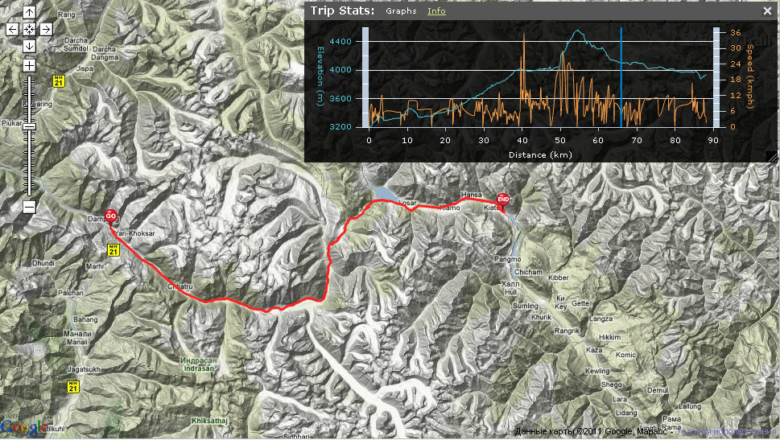
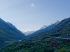 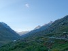 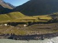 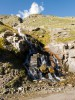 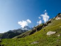 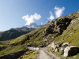 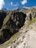 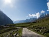 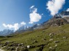 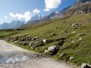 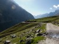 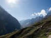 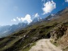 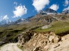 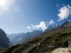 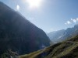 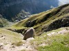 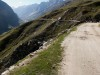 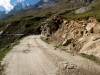 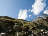 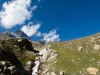 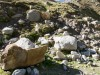 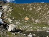 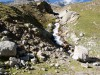 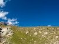 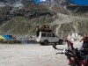 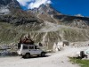 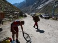 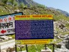 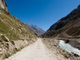 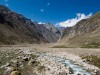 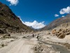 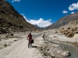 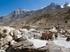 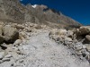 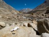 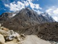 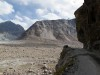 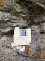  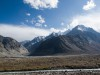 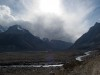 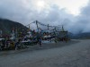 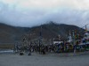 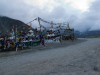 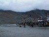 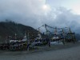 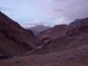
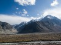 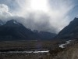 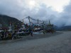 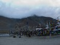 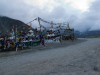 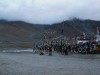 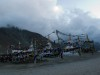 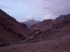